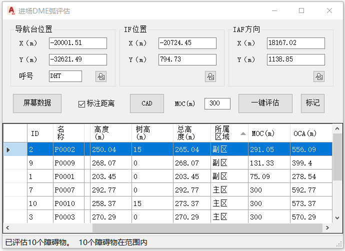
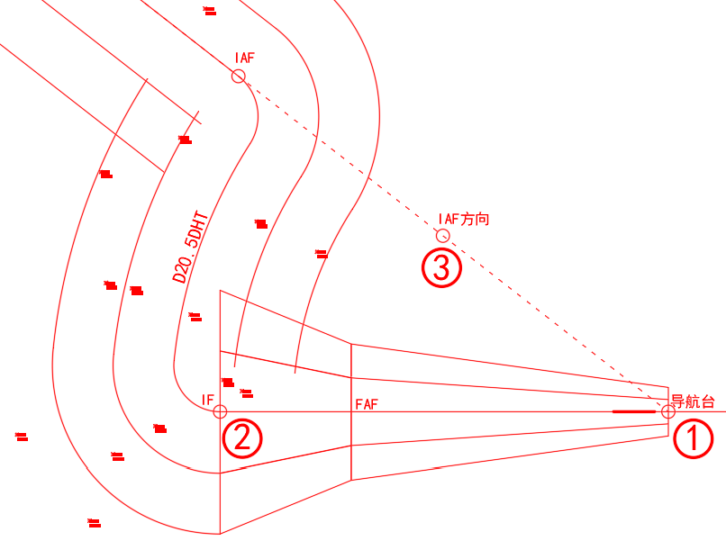

功能简介
【起始进近DME弧】用于起始进近段的 DME 弧线评估与绘制。输入导航台位置、IF（中间进近定位点）位置与 IAF（起始进近定位点）方向后，评估并绘制 DME 弧保护区，可标注距离。
界面预览

界面元素
| 分区 / 控件 | 说明 |
|---|---|
| 导航台位置 | DME / VOR 导航台的坐标。 |
| IF位置 | 中间进近定位点（IF）的位置。 |
| IAF方向 | 起始进近定位点（IAF）的方位。 |
| 屏幕数据（按钮） | 从屏幕中拾取坐标点数据。 |
| 标记（按钮） | 标记重要障碍物。 |
| 一键评估（按钮） | 自动完成 DME 弧评估计算。 |
| 标注距离（复选框） | 是否在弧线上标注距离数值。 |
| CAD（按钮） | 在 CAD 窗口中绘制 DME 弧保护区。 |
操作步骤
- 命令行输入
Y10_起始进近DME弧打开窗口。 - 填写或用【屏幕数据】拾取导航台位置、IF 位置、IAF 方向。
- 点击【一键评估】完成计算，可勾选【标注距离】。
- 点击【CAD】按钮，在 CAD 窗口中绘制 DME 弧保护区。
提示：先用【标记】在图上确认各定位点位置，再评估绘制，可减少坐标填错。
效果示例
